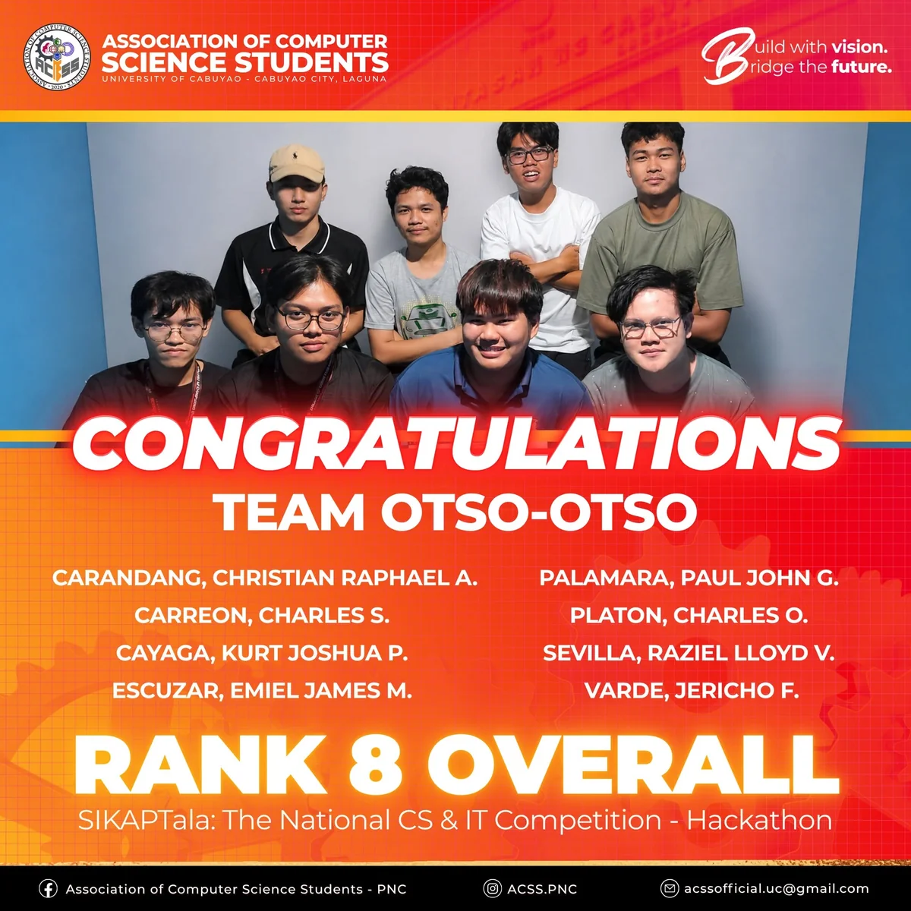

SIKAPTala 2026: The National CS & IT Competition, Top 8 Finalist
I built the patient-facing page of Lunas, a QR-based emergency medical information system, with an eight-person team that placed Top 8 nationally at SIKAPTala 2026.
Lunas gives responders access to a patient's critical health data through a unique QR code, including allergies, medication, blood type, and conditions.
View Event Post View Lunas Project More about this achievement